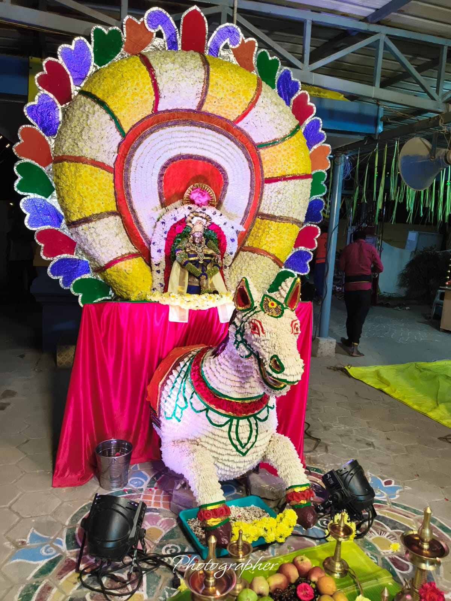

ABASS
Objects of the Trust
Abhath Bhanthavan Ayyappa Seva Sangham Trust — devotion, service, culture, education and community.


Purpose of Trust
Charitable Objects of the Trust
Summarised from the ABASS Trust Deed. These are the Trust's declared charitable objects, guiding every initiative and community project.
01
Religious & Spiritual Heritage
- Maintain temples and support religious and temple-related activities
- Promote religious ethics and moral values for the welfare of society
- Advance Indian religious culture and literature
- Train teachers and workers in the ideals of religious education
- Publish literature and maintain libraries and reading rooms
- Function as a non-communal, secular charitable organisation open to all
02
Education & Youth Development
- Establish and run educational institutions, hostels and Gurukulams
- Award scholarships, stipends and fee assistance to deserving students
- Support moral, social and employability-oriented training
- Assist research, higher studies and institutions for differently-abled learners
- Conduct seminars, workshops and non-formal / adult education
03
Social Welfare & Relief
- Support the poor and indigent, irrespective of caste, creed or religion
- Run homes and feeding houses for the aged, orphans and destitute
- Provide relief and rehabilitation during calamities and distress
- Generate employment opportunities and public-utility initiatives
- Extend welfare support to women, children and working women
04
Culture, Arts & Community
- Encourage art, music, dance and sporting activities
- Organise cultural programmes, conferences and community events
- Establish centres and branches to extend Trust activities
- Partner with like-minded societies, agencies and government bodies
- Maintain transparent, accountable governance under the Board of Trustees
Source: ABASS Trust Deed, Clause 4 (Objects), executed 25 March 2024. Presented as declared objects, guiding all long-term initiatives of the Trust.